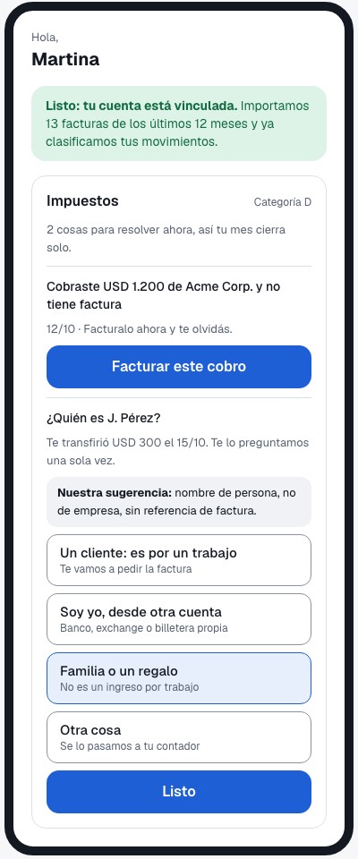
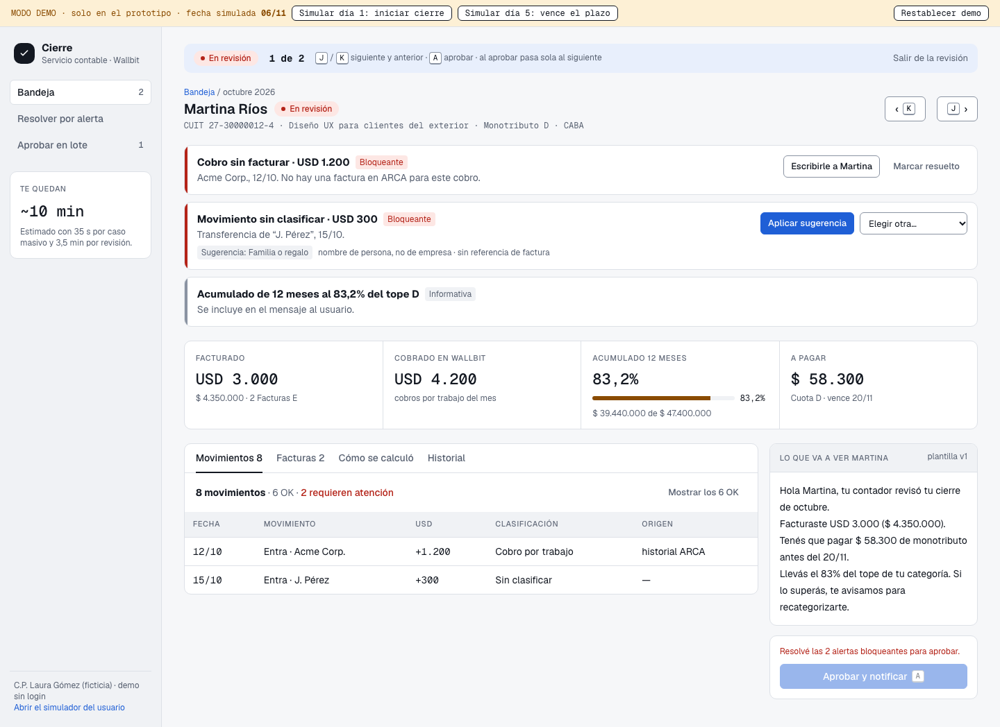
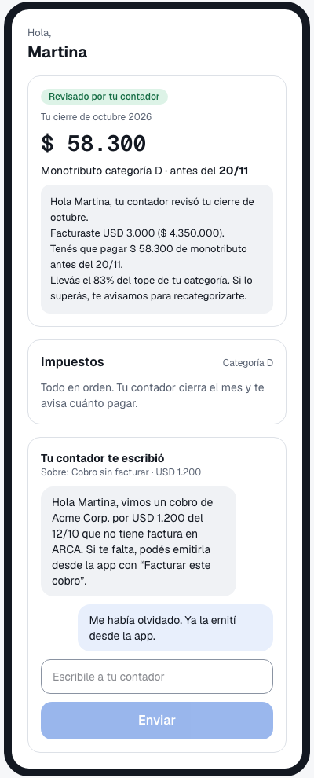
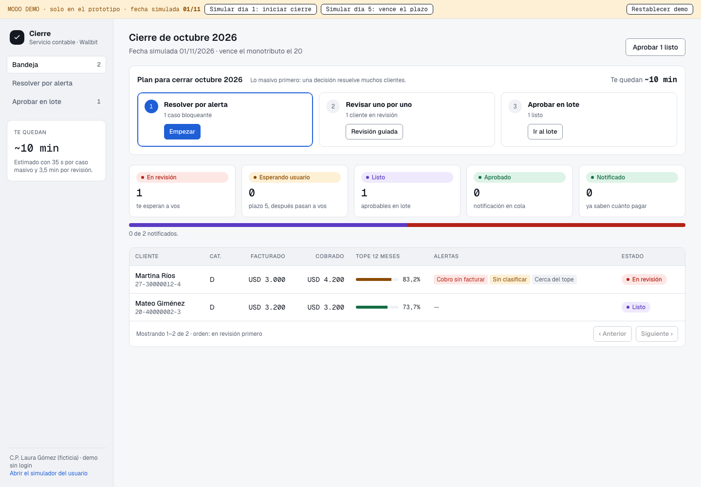

De 30 a cientos de clientes
por contador.
Cierre: la herramienta con la que el contador cierra el mes de cada freelancer. Qué entra en las primeras 6 semanas, qué muestra el prototipo y hacia dónde va.
Hoy el contador trabaja cliente por cliente.
- Resúmenes y capturas por WhatsApp
- Separa a mano qué es ingreso
- Planillas, mes a mes
- Los movimientos ya están en Wallbit
- Las facturas llegan solas desde ARCA (AfipSDK)
- El contador solo mira excepciones
La herramienta calcula todo.
El contador aprueba excepciones.
El usuario deja de preocuparse.
- Clasifica cada cobro al llegar
- Cruza cobros con facturas de ARCA
- Calcula la cuota y el tope de 12 meses
- Resuelve solo lo que la herramienta no puede
- Aprueba en lote lo que está limpio
- Firma todo lo que llega al usuario
- Factura o aclara en el momento del cobro
- Recibe cuánto pagar y cuándo
- Siempre revisado por su contador
Las primeras 6 semanas
Un engineer y un contador. El objetivo: usuarios reales cerrando un mes de verdad.
Un solo caso, de punta a punta.
Monotributistas que facturan servicios al exterior con Factura E: la mayoría de los usuarios y un cálculo acotado.
Seis semanas, un cierre real al final.
Cuánto cuesta conectarse a ARCA.
Las 6 semanas
pilotoEn marcha
por mesSe elige el plan más barato para cada cantidad. Cada usuario es un CUIT; las consultas (leer sus comprobantes) quedan muy por debajo del límite del plan.
Precios publicados por AfipSDK (afipsdk.com/pricing): Pro USD 25 (10 CUITs, +USD 10 c/u), Growth USD 80 (100 CUITs, +USD 5 c/u), Startup USD 250 (1.000 CUITs, +USD 1 c/u). Emitir Factura E desde la app (meses 2–3) usa Factura SDK, con límites de facturas por plan.
Prevenir durante el mes, no perseguir el día 1.
Cada capa resuelve lo que puede. Al contador llega el resto.
De cada 100 movimientos · ejemplo ilustrativo, las proporciones reales se miden en el piloto. Sin reglas por cliente: el trabajo del contador no crece con cada usuario nuevo.
El prototipo
Funciona de punta a punta, con datos inventados. make up && make seed
Del cobro sin factura al aviso aprobado.



El día 1, el contador abre un plan, no una pila.

Cinco estados. Ningún atajo.
No hay camino a “notificado” sin pasar por “aprobado”. Y no se aprueba con una alerta bloqueante abierta. La regla regulatoria vive en el código, no en la buena voluntad.
Lo que garantiza el diseño.
Nada sin aprobación
Cada aviso impositivo sale de una aprobación registrada del contador matriculado, individual o en lote.
Snapshot inmutable
Al aprobar se congela lo que se aprobó. La base de datos impide modificarlo.
Auditoría completa
Quién hizo qué y cuándo, sin poder borrar. También sirve para medir el trabajo del contador.
Los datos no salen
Sin LLMs ni APIs externas con datos de usuarios. Lo que aprenda el sistema, aprende adentro.
El mes completo, con 2.000 clientes.
Barras de los procesos en escala de 10 minutos. 0 errores y ningún mensaje perdido en todas las corridas. Las pruebas encontraron 3 bugs de concurrencia, ya corregidos.
El cálculo sobra. El límite es el contador.
Cálculo del día 1
Tiempo del día 1 según la cantidad de clientes, en una laptop. La línea marca 10 minutos. Hoy hay 2.000.
Actividad durante el mes
Eventos por segundo. Con 2.000 usuarios, aun si todos cobraran en la misma hora, serían ~6 por segundo.
El contador
clientes por contador con 16 h de revisión al mes, 3,5 min por cierre y 24 % de cierres en revisión. Cada punto que baje ese 24 % suma capacidad.
Todo lo que pasa, en vivo.
¿Cuántos clientes puede atender?
Cada acción del contador queda en la auditoría. Un dashboard la convierte en:
El sistema suma 0,2 s por revisión: el tiempo es todo del contador. Por eso se mide con personas, no con robots.
24 % es lo que cayó en revisión en la prueba de 2.000 clientes; 3,5 min es la estimación inicial. El piloto los reemplaza por tiempos reales.
A largo plazo
Con un mes de datos reales, el sistema y el flujo del contador empiezan a mejorar solos.
Tres horizontes.
Menos fricción
- Emitir Factura E desde la app de Wallbit, con AfipSDK
- Resolver muchos clientes a la vez por contraparte
- Reabrir un cierre con trazabilidad
- Notificaciones push
Menos cobros sin facturar el día 1.
Aprender de los datos
- Modelo de ML local, primero en modo sombra
- Afinar el flujo con la performance del contador
- Varios contadores con cartera asignada
Menos cierres que necesitan al contador.
Más que monotributo
- Recategorización semestral asistida
- Ingresos Brutos por jurisdicción
- Responsables inscriptos y otros regímenes
El servicio llega a todos los que lo necesitan.
Un modelo propio, entrenado adentro.
Respuestas del usuario y decisiones del contador, con su contexto.
Predice sin mostrar nada. Se compara contra lo que decidió el contador.
Reemplaza la sugerencia actual cuando supera el umbral acordado con el contador.
Medir, encontrar el cuello, cambiar, volver a medir.
Cuatro números. Tres ya se miden.
Que el contador siga siendo el cuello de botella.
Si los usuarios no facturan ni responden a tiempo, todo cae en revisión.
- Avisos en el momento del cobro
- Plan del día con tiempo estimado
- Revisión guiada con teclado
- Aprobación en lote
Los objetivos son hipótesis iniciales: se ajustan con el primer mes real.
La herramienta calcula todo.
El contador aprueba excepciones.
Consola en localhost:3000/consola · app del usuario en localhost:3000/app · Grafana en localhost:3001